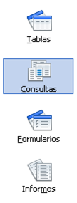
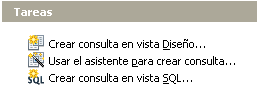

Tecnología de la Información y la Comunicación: Bases de datos
4.1. Consultas
¿Para qué es necesario almacenar la información en una base de datos?
|
 Objetos |
Los gestores de bases de datos facilitan el almacenamiento de la información en estructuras diseñadas por el usuario. |
| También disponen de herramientas para seleccionar la parte de la información con la que se va a trabajar, es decir, realizar consultas. | |
| Y por último, permiten diseñar la apariencia externa de esta información, es decir, formularios e informes. |
Importante
Una consulta es un objeto de la base de datos que permite seleccionar parte de la información contenida en una o varias tablas para visualizarla en forma de otra tabla. La consulta se realiza definiendo las condiciones que deben cumplir uno o varios campos de dichas tablas.
El resultado de una consulta se ofrece en forma de tabla. Sin embargo, su realización suele estar ligada a la presentación de informes, puesto que permite seleccionar sólo la parte del contenido de la tabla que se va a manipular.
La consulta se puede diseñar usando tres herramientas:
- Crear una consulta en vista diseño.
- Usar el asistente de creación de consultas.
- Crear una consulta en lenguaje SQL
 Creación de consultas
Comprueba lo aprendido
Como ya estás familiarizado con OOo Base, no te costará asociar cada imagen a una herramienta: asistente o vista diseño.
Comprueba lo aprendido
Retroalimentación
Falso
Las consultas se muestran en forma de tabla, pero son visualizaciones de datos de éstas.
Retroalimentación
Falso
Se pueden consultar datos de varias tablas.Retroalimentación
Falso
Es una herramienta de creación de consultas, sea cual sea el uso posterior de dicha consulta.